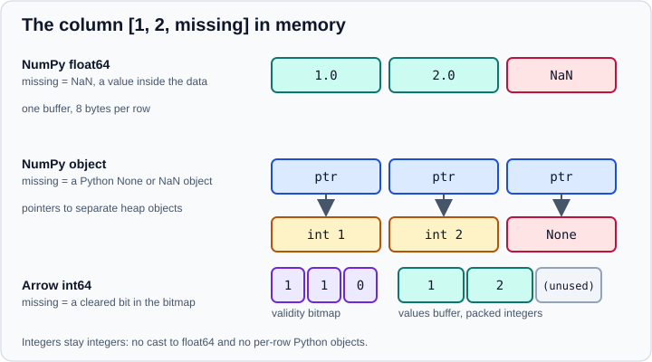

PyArrow-Backed Data
|
This content was generated with the assistance of AI and should be verified against the official documentation before being relied on in production. |
Since pandas 1.x a column can be stored not in a NumPy array but in an Apache Arrow array held by PyArrow. Such a column has a type that is exact and nullable, a compact memory layout, native lists, structs and decimals, and the same bytes as Polars, DuckDB and Spark use. This page explains how to create and read PyArrow-backed data, how the Arrow types differ from the NumPy-backed and nullable types, and where the cost is.
The page targets Python 3.13 or 3.14 and pandas 3.1 and was checked in October 2026. Every example was run on pandas
3.1.0 with PyArrow 26.0.0 and NumPy 2.5.4. PyArrow remains an optional dependency of pandas: install it with
python -m pip install pyarrow. Older notes that say pandas 3.0 would make PyArrow a required dependency are outdated;
that plan was postponed. In pandas 3.x the default str dtype uses PyArrow when it is installed and falls back to a
Python implementation otherwise (see Text Data and the str Dtype).
Other dtypes are NumPy-backed unless you ask for Arrow.
Why use Arrow-backed columns

A NumPy int64 column cannot hold a missing value, so pandas converts it to float64, and an object column stores a pointer
to a separate Python object per row. An Arrow array keeps the values packed in one buffer and records missing entries in a
separate validity bitmap. The consequences:
-
Integers and booleans with missing values keep their type (see Nullable Integer and Boolean for pandas' own NumPy-based alternative).
-
Strings use far less memory than an object column and string operations run in compiled code.
-
The data can be handed to Arrow-based tools without copying or converting each row (see Beyond the Core: Polars, Arrow, DuckDB and Deep Learning).
-
Types that NumPy lacks exist natively: decimals, lists, structs, maps, time, durations with units and dictionary-encoded categories.
The cost is that some pandas operations are not yet implemented through Arrow and fall back to slower paths, that third-party code written for NumPy may not understand the dtype, and that an Arrow column is not always faster for small data.
Creating PyArrow-backed data
Pass a type name ending in [pyarrow] as the dtype, or an explicit pd.ArrowDtype for types with parameters:
import decimal
import pandas as pd
import pyarrow as pa
ser = pd.Series([1, 2, None], dtype="int64[pyarrow]")
print(ser)
print(type(ser.dtype).__name__)
lst = pd.Series([["a", "b"], ["c"], None], dtype=pd.ArrowDtype(pa.list_(pa.string())))
print(lst)
dec = pd.Series([decimal.Decimal("3.19"), None], dtype=pd.ArrowDtype(pa.decimal128(5, 2)))
print(dec, dec.sum())0 1
1 2
2 <NA>
dtype: int64[pyarrow]
ArrowDtype
0 ['a' 'b']
1 ['c']
2 <NA>
dtype: list<item: string>[pyarrow]
0 3.19
1 <NA>
dtype: decimal128(5, 2)[pyarrow] 3.19The int64 column stays integer while holding a missing value, which is impossible with NumPy. The decimal column keeps exact
decimal arithmetic instead of binary floating point.
An existing Series, Index or DataFrame converts with astype:
print(pd.Series([1.5, 2.5]).astype("double[pyarrow]").dtype)
print(pd.Series([1, 2]).astype(pd.ArrowDtype(pa.int8())).dtype)double[pyarrow]
int8[pyarrow]To and from PyArrow
tbl = pa.table({"a": [1, 2, 3], "b": ["x", "y", None]})
print(tbl.to_pandas().dtypes.astype(str).tolist())
print(tbl.to_pandas(types_mapper=pd.ArrowDtype).dtypes.astype(str).tolist())
print(pa.array(ser))
frame = pd.DataFrame({"a": [1, 2, 3], "b": ["x", "y", None]})
print([str(t) for t in pa.Table.from_pandas(frame).schema.types])['int64', 'str']
['int64[pyarrow]', 'string[pyarrow]']
[
1,
2,
null
]
['int64', 'large_string']Source: pandas.DataFrame.astype
Table.to_pandas() converts to NumPy-backed pandas dtypes by default; types_mapper=pd.ArrowDtype keeps the Arrow
types and avoids a copy where possible. pa.array(series) goes the other way, and pd.arrays.ArrowExtensionArray
wraps an existing PyArrow array or chunked array.
Reading files with dtype_backend and engine
Most readers accept dtype_backend, which sets the dtypes of the result, and some accept engine="pyarrow", which sets
the parser. They are independent:
import io
data = "a,b,c\n1,2.5,x\n2,,y\n3,4.5,\n"
for kw in [
{},
{"engine": "pyarrow"},
{"dtype_backend": "numpy_nullable"},
{"dtype_backend": "pyarrow"},
]:
print(kw, pd.read_csv(io.StringIO(data), **kw).dtypes.astype(str).tolist()){} ['int64', 'float64', 'str']
{'engine': 'pyarrow'} ['int64', 'float64', 'str']
{'dtype_backend': 'numpy_nullable'} ['Int64', 'Float64', 'string']
{'dtype_backend': 'pyarrow'} ['int64[pyarrow]', 'double[pyarrow]', 'string[pyarrow]']-
engine="pyarrow"makesread_csv,read_json,read_feather,read_orcandread_parquetuse PyArrow to parse; the official guide also listsread_tableas experimental. It can be faster on large files, but supports fewer options than the default C parser. The result is still NumPy-backed unless you also setdtype_backend. -
dtype_backend="pyarrow"returns Arrow-backed columns and does not needengine="pyarrow". -
dtype_backend="numpy_nullable"returns pandas' own nullable dtypes (Int64,Float64,boolean,string). -
The argument also works with
to_numeric,DataFrame.convert_dtypesandSeries.convert_dtypes, and with Parquet and SQL readers (see Parquet, Feather, ORC and Iceberg, SQL Databases and CSV and Text Files):frame = pd.DataFrame({"a": [1, None], "b": ["x", "y"]}) print(frame.convert_dtypes(dtype_backend="pyarrow").dtypes.astype(str).tolist()) print(pd.to_numeric(pd.Series(["1", "2", None]), dtype_backend="pyarrow").dtype)['int64[pyarrow]', 'string[pyarrow]'] int64[pyarrow]
Three kinds of string column
String columns are where the three storage systems meet, and the names are easy to confuse.
s_arrow = pd.Series(["alpha", "beta", None], dtype=pd.ArrowDtype(pa.string()))
s_string = pd.Series(["alpha", "beta", None], dtype="string[pyarrow]")
s_default = pd.Series(["alpha", "beta", None])
for s in (s_arrow, s_string, s_default):
print(s.dtype, "|", s.str.contains("a").dtype, "|", s.str.len().dtype)
print(s_arrow.dtype == s_string.dtype)string[pyarrow] | bool[pyarrow] | int32[pyarrow]
string | boolean | Int64
str | bool | float64
FalseSource: pandas.ArrowDtype
| Series created with | dtype shown |
Missing value | Operations return |
|---|---|---|---|
|
|
|
NumPy |
|
|
|
Nullable |
|
|
|
Arrow |
The three are different dtypes even when the characters are the same. dtype="string[pyarrow]" selects the pandas
StringDtype with a PyArrow implementation (it shows as string), whereas pd.ArrowDtype(pa.string()) is the full Arrow
type, whose name unfortunately prints as string[pyarrow]. Do not compare dtypes with == across them. Use
pd.api.types.is_string_dtype(ser) to ask "is this a string column?", and see
Text Data and the str Dtype for the details of the default str type.
Memory and speed
The same two million words stored as three string types (output of the machine used for the checks; absolute numbers vary, the ratios are what matters):
import time
import numpy as np
words = np.random.default_rng(0).choice(["alpha", "beta", "gamma", "delta"], 2_000_000)
candidates = {
"object": pd.Series(words, dtype=object),
"str": pd.Series(words),
"arrow string": pd.Series(words, dtype=pd.ArrowDtype(pa.string())),
}
for name, s in candidates.items():
t0 = time.perf_counter()
s.str.upper()
ms = round((time.perf_counter() - t0) * 1000)
print(f"{name:13} {s.memory_usage(deep=True) // 1_000_000:4d} MB {ms:4d} ms")object 107 MB 96 ms
str 25 MB 17 ms
arrow string 17 MB 13 msSource: pandas.ArrowDtype
Moving from object to an Arrow-backed string reduced memory by a factor of four to six and made .str.upper() several
times faster. The default str dtype already captures most of that gain, so an explicit ArrowDtype(pa.string()) is mainly
justified when you want Arrow semantics (such as the bool[pyarrow] results above).
Operations and accessors
pandas runs numeric, comparison, string and datetime operations through PyArrow compute functions where it can, and the result keeps an Arrow dtype. Arrow-only types add accessors:
st = pd.Series(
[{"x": 1, "y": "a"}, {"x": 2, "y": "b"}],
dtype=pd.ArrowDtype(pa.struct([("x", pa.int64()), ("y", pa.string())])),
)
print(st.struct.field("x"))
print(st.struct.explode())
print(lst.list.len())
ts = pd.Series(pd.to_datetime(["2026-01-15 10:00", "2026-02-20 11:30"]), dtype=pd.ArrowDtype(pa.timestamp("us")))
print(ts.dt.month.tolist(), ts.dt.strftime("%Y-%m").tolist())0 1
1 2
Name: x, dtype: int64[pyarrow]
x y
0 1 a
1 2 b
0 2
1 1
2 <NA>
dtype: int32[pyarrow]
[1, 2] ['2026-01', '2026-02']Source: pandas.ArrowDtype
-
.structoffersfieldandexplode,.listofferslen(and more, see the accessor reference), and.dtand.strbehave like their NumPy-backed counterparts. -
For anything pandas lacks, call PyArrow directly on the underlying array:
pa.array(ser)gives a PyArrow array, andpyarrow.computefunctions work on it, for examplepc.add(pa.array(ser), 10). -
groupbyon Arrow columns keeps the Arrow dtype of the result (anint64[pyarrow]sum stayedint64[pyarrow]).
Missing values
Arrow columns use pd.NA. A NaN that you pass in to a floating column is converted to a missing value on creation, so the two
are not distinguished:
import numpy as np
a = pd.Series([1.0, np.nan, None], dtype="float64[pyarrow]")
print(a.isna().tolist(), a.mean())
print(pd.Series([True, None], dtype="bool[pyarrow]") | True)[False, True, True] 1.0
0 True
1 True
dtype: bool[pyarrow]Source: pandas.ArrowDtype
Boolean logic follows three-valued (Kleene) rules, so NA | True is True. See
Missing Data for the sentinels compared. When you convert to NumPy, give a
fill value, because a missing value cannot be an integer:
ser = pd.Series([1, 2, None], dtype="int64[pyarrow]")
print(ser.to_numpy(dtype="float64", na_value=np.nan))
print(ser.to_numpy().dtype)[ 1. 2. nan]
float64Choosing a backend
| Need | Use | Why |
|---|---|---|
Nothing special, mostly numeric data without gaps |
NumPy-backed default |
Best tool support, simplest, fastest for small data |
Integers or booleans with missing values, staying inside pandas |
|
Both avoid the cast to float64; Arrow also gives interop |
Big string columns, categories, decimals, lists or structs |
Arrow |
Compact and exact; native nested types |
Data handed to Polars, DuckDB or Parquet tools |
Arrow |
Shares the same memory layout, so no conversion per row |
Libraries that expect NumPy arrays |
NumPy-backed |
Convert at the boundary with |
Pitfalls
-
A categorical column converted to Arrow becomes a dictionary type (
dictionary<values=string, indices=int8, ordered=0>in the Parquet example), so compare dtypes after a round trip. -
The official guide says operations use PyArrow compute functions "where possible", which means some do not. Time your own code on your own data (see Enhancing Performance).
-
Mixing backends in one expression upcasts or falls back; keep a column in one backend, and convert explicitly with
astype. -
An
ArrowDtypecolumn holds apyarrow.ChunkedArray, a list of Arrow arrays that act as one column. -
dtype_backendchanges the result type only; it does not change how the file is stored.
Where older tutorials are outdated
| Older statement | Current situation (October 2026) |
|---|---|
"pandas 3.0 will require PyArrow" (PDEP-10, articles from 2023 and 2024) |
Postponed. PyArrow stays optional in pandas 3.1; the default |
"Use |
Since pandas 3.0 plain strings already default to the |
|
It returns NumPy-backed dtypes unless |